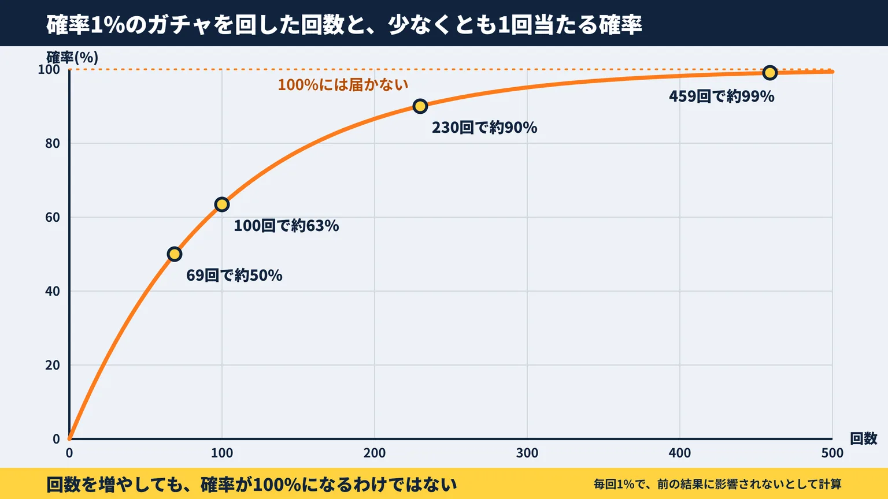

「100回で当たる」は本当？
ゲームのガチャで、当たりの確率が1％と表示されているとする。1回で当たる確率が1％なら、100回回せば、1％×100＝100％になって、必ず当たる——そう考えたくなる。
確率1％のガチャを100回回したとき、少なくとも1回は当たる確率は、何％くらいだろう。
- ほぼ100％
- 約80％
- 約63％
- 約50％
「ずっと外れる」確率を計算する
「少なくとも1回当たる」は、「100回ぜんぶ外れる」の反対のことだ。だから、先に「ぜんぶ外れる確率」を求めればよい。
1回で外れる確率は99％、つまり0.99。毎回の結果が前の結果に影響されないなら、100回続けて外れる確率は、0.99を100回かけた 0.99100 で求められる。電卓で計算すると、約0.366。つまり36.6％だ。
したがって、100回回して少なくとも1回当たる確率は、100％ − 36.6％ ＝ 約63.4％。
| 回す回数 | 少なくとも1回当たる確率 |
| 10回 | 約9.6％ |
| 50回 | 約39.5％ |
| 69回 | 約50.0％ |
| 100回 | 約63.4％ |
| 200回 | 約86.6％ |
| 300回 | 約95.1％ |
| 459回 | 約99.0％ |
この表は、毎回の当たる確率が1％で、前の結果に影響されないものとして計算した値だ。確率が50％を超えるのは、69回目から。100回回しても、約63.4％にしかならない。100人が100回ずつ回すと、およそ37人は1回も当たらない計算になる。

電卓で、0.99に0.99をくり返しかけていき、答えが0.5より小さくなるのは何回目か調べてみよう。べき乗(累乗)のキーがある電卓なら、0.99nの n を変えて試してもよい。
答え合わせ：69回目(0.9969は約0.4998)。
「平均して100回」の意味
確率1％とは、「平均すると、100回に1回当たる」という意味だ。当たりが出るまでの回数の平均が、1÷0.01＝100回になる。
ただし、「平均が100回」であることと、「100回で必ず当たる」ことは、同じではない。100回回したとき、当たりが何回出るかを計算すると、次のようになる。
| 100回で当たった回数 | その確率 |
| 0回 | 約36.6％ |
| 1回 | 約37.0％ |
| 2回 | 約18.5％ |
| 3回以上 | 約7.9％ |
当たりの平均は1回だが、「ちょうど1回」は約37％にすぎない。0回の人も約37％いて、2回以上当たる人は約26％いる。結果には、かなりのばらつきがある。
外れ続けたら、次は当たりやすい？
99回続けて外れたら、100回目は当たりやすくなるだろうか。答えは「いいえ」だ。毎回の抽選が前の結果に影響されないなら、100回目も、当たる確率は1％のままである。ガチャは、前に何が出たかを覚えていない。
「これだけ外れたのだから、そろそろ当たるはず」という感覚は、確率の計算では説明できない。なお、ゲームによっては、一定の回数でルールとして当たりが保証される仕組みを用意している場合もある。それは、ゲームのルールの話で、確率の計算とは別のことだ。
コンプガチャが禁止されたわけ
ガチャには、かつて「コンプガチャ」というしくみがあった。特定の複数のアイテムをすべて集めると、さらに珍しいアイテムがもらえるというものだ。2012年5月、消費者庁は、これが景品表示法で禁止されている「カード合わせ」にあたるという考えを示した。そして7月1日から、行政処分の対象となった。1回ごとのガチャが禁止されたわけではなく、「そろえさせるしくみ」が対象になったのである。
禁止された理由の1つは、そろうまでの回数を、実際より少なく感じさせるおそれがあることだ。カードをそろえていくほど、残りのカードを引き当てる確率は下がるのに、はじめのうちは簡単に集まるので、残りもすぐにそろうと思ってしまう。
たとえば、5種類のカードが同じ確率で出るとき、新しい種類が1つ出るまでの平均の回数は、次のようになる。
| 集める種類 | 新しい1種類が出るまでの平均 |
| 1種類目 | 1回 |
| 2種類目 | 約1.25回 |
| 3種類目 | 約1.7回 |
| 4種類目 | 2.5回 |
| 5種類目 | 5回 |
| 合計 | 約11.4回 |
1種類目は1回で出るのに、最後の1種類だけで平均5回かかり、全体の約44％をしめる。実際のコンプガチャでは、出やすさが同じとは限らず、珍しいものほど出にくい。そろえるのは、この計算よりずっと大変になる。
確率は「保証」ではなく「見通し」
確率の数字は、「当たるかどうか」を保証するものではない。しかし、「何回くらい回すと、どれくらいの確率で当たるのか」という見通しを、数字で教えてくれる。90％の確率を目指すなら、230回が目安になる。回数が増えれば、かかるお金も増える。
ガチャを引くかどうかは、自分で決めることだ。決める前に、確率の数字が何を教えてくれて、何を教えてくれないのかを知っておこう。
- 確率2％のガチャで、少なくとも1回当たる確率が50％を超えるのは、何回目だろう。(答え：35回目。0.9835は約0.493)
- 確率1％のガチャで、99回続けて外れたあと、100回目に当たる確率は何％だろう。
- 日常生活で、「確率」の数字を見かける場面を探してみよう。